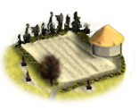
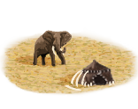
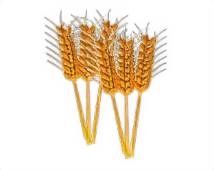
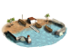
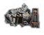
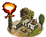
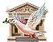

RTR: Imperium Surrectum
RTR: Imperium SurrectumBuildings
82 building chains, 271 levels between them. Each page shows the game's own picture and description for every level, what it does, what it costs, how long it takes, the minimum settlement size, and its upgrade path.
24 levels exclude another building — building one forecloses the other. Those are marked on the pages, because a commitment that quietly locks out an alternative is worth knowing about first.
Every chain
| Chain | Levels | Excl. | What it is | Chain | Levels | Excl. | What it is | Chain | Levels | Excl. | What it is | |||
|---|---|---|---|---|---|---|---|---|---|---|---|---|---|---|
| Acropolis of Athens chain | 16 | The Acropolis is a flat-topped rock which rises 150 m above sea level in the city of Athens. | Small School (Civic) chain | 6 | Staying in a settlement with an educational institution can have positive effects on the trait and ancillaries your characters receive. | Cisterns (Sanitation) chain | 5 | Cisterns to collect and hold drinking water for later use. | ||||||
| Farms chain | 5 | no description in the game files | Governor's House chain | 5 | The Governor's House is the controlling hub of the settlement, and the basis of all state power. | Irrigation Ditches (Crops) chain | 5 | Simple ditches irrigate farmland, enabling basic cultivation | ||||||
 | Land Clearance (Crops) chain | 5 | Clearing the land to make basic fields for crops | Local Barter chain | 5 | The Local Barter trades some local produce to other settlements increasing - in a small way - the wealth of the community. | Marsh Drainage Channels (Crops) chain | 5 | The initial, costly digging of canals to begin draining marshland. | |||||
| Open Field Pasturing (Husbandry) chain | 5 | Unenclosed fields for grazing livestock | Shrine chain | 5 | Religion also makes a people feel happy and content to know that the Gods are honoured. | Slash and Burn (Crops) chain | 5 | Burning sections of forest to temporarily enrich the soil for farming before moving on | ||||||
| Wooden Palisade chain | 5 | A wall of logs around a settlement gives some security, but it will not deter or delay attackers for very long. | Beekepers (Rural) chain | 4 | A hive of activity that sweetens life, despite the occasional sting. | Grape Orchards (Rural) chain | 4 | A modest vineyard producing wine that’s (mostly) drinkable, enough to keep the locals happy and the barrels full. | ||||||
| Incense Resin Collectors (Urban) chain | 4 | A modest incense trader has set up shop, enough to perfume a few temples and homes. | Jewellery Crafter (Industry) chain | 4 | Tinkering with valuable materials to make beautiful trinkets. | Murex Snail Collectors (Industry) chain | 4 | A small workshop for extracting purple dye from sea snails has been established, keep your nose plugged! | ||||||
| Olive Grove (Rural) chain | 4 | A small olive grove has taken root, where the future of olive oil begins, one olive at a time. | Racing Course (Leisure) chain | 4 | Where the most fit show their skills. | Silk Trader (Urban) chain | 4 | Trader of otherworldly fabrics for the world’s wealthiest. | ||||||
| Slope Pasturing (Husbandry) chain | 4 | Herding flocks and herds on the lower slopes | Small Glass Reworking Shop (Urban) chain | 4 | A small glass workshop has been established, where beauty is blown into shape, if it doesn’t crack along the way. | Small Granary (Food trade) chain | 4 | 4 | Roman life cannot flourish without access to its staple. | |||||
| Small Papyrus Plantation (Rural) chain | 4 | A modest papyrus maker, supplying essential writing material for local needs. | Small Treasury chain | 4 | This building represents the wealth this region has amassed. | Tannery (Urban) chain | 4 | Turning hides into leather and holding our noses. | ||||||
| Town Theatre (Leisure) chain | 4 | A town theatre is a wooden structure used for plays. | Training Grounds chain | 4 | 4 | Where recruits learn to march, wield arms, and become the heart of the Republic’s army. | Wooden Arena (Leisure) chain | 4 | This small wooden arena allows small-scale Games to be staged for the entertainment and satisfaction of all true Romans. | |||||
| Amber Collectors (Urban) chain | 3 | Where nature's precious resin changes hands, one shiny bead at a time. | Blacksmith (Industry) chain | 3 | A blacksmith provides superior quality weaponry for any troops trained in the settlement. | Camel Herd (Rural) chain | 3 | A herd of humps, fit for desert duty and milk. | ||||||
| Date Palm Plantation (Rural) chain | 3 | A simple yet essential operation, sweetening daily life one palm at a time, this modest date plantation provides a sweet addition to the region’s prod | Dyes Collectors (Urban) chain | 3 | Basic collection of natural dye ingredients, supporting the simple but essential dyeing of fabrics. |  | Elephant Hunters (Rural) chain | 3 | Where courage meets colossal tusks, bringing back ivory and a hint of legend. | |||||
| Execution Square chain | 3 | An Execution Square does much to quell all rebellious spirits. | Fish Salter (Urban) chain | 3 | A preserver and enhancer of the daily catch. |  | Grain Imports (Food trade) chain | 3 | 3 | Grain imports boost population growth, though the extra mouths don’t do trade any favors. | ||||
| Hemp Farm (Rural) chain | 3 | A small hemp farm. | Herb gatherer (Urban) chain | 3 | Where nature’s first-aid kit is gathered and prepared, and someone’s probably about to feel better. | Horse Trainer (Rural) chain | 3 | Turning wild steeds into war-ready wonders. | ||||||
| Hunting Grounds (Rural) chain | 3 | The wild whispers, but only hunters hear. | Local Garrisons chain | 3 | 3 | Garrisons improve public order and ensure the safe movement of goods and legions across the province. | Local Healer (Healing) chain | 3 | A trained medicus provides basic care for the sick and wounded, improving public health. | |||||
| Lumber Camp (Rural) chain | 3 | Warmth, and shelter from the elements, can be found here naturally. | Magistrates' Court (Civic) chain | 3 | A local magistrate deals with everyday infractions, crimes and matters of property | Marble Pit (Industry) chain | 3 | A small quarry is producing marble for local construction. | ||||||
| Mast Pasturing (Adaptive husbandry) chain | 3 | Allowing livestock to graze freely within the forest | Milling District (Urban) chain | 3 | Grain goes in, flour (and life) comes out. | Nomad Communal Herding (Husbandry) chain | 3 | The basic nomadic existence, herding the flocks in close tribal cooperation | ||||||
| Pottery Kiln (Urban) chain | 3 | A modest pottery workshop been set up, supplying local markets with sturdy, if modest, ceramics. | Qanat Well (Crops) chain | 3 | A well and tunnel system that brings underground water to the surface. | Reedland Pasturing (Adaptive husbandry) chain | 3 | Allowing livestock to graze freely within the wetlands | ||||||
| Roads chain | 3 | Roads are vital to territorial defence, allowing armies to move to meet any threat. | Saltworks (Industry) chain | 3 | A modest salt extraction site has begun operations, keeping life a little less tasteless. | Slave Trader (Urban) chain | 3 | Where people come cheaper than a good pair of sandals and twice as useful. | ||||||
| Spice Stall (Urban) chain | 3 | A modest spice trading operation, adding flavor to both food and economy. | Stone Quarry (Industry) chain | 3 | Where the earth’s bones are slowly chipped away, one stone at a time, this modest stone pit, provides materials for the local building projects. | Sulphur Mine (Industry) chain | 3 | Smells horrible, but very usefull. | ||||||
| Tar Gatherer (Industry) chain | 3 | A site for gathering pitch. | Toolmakers' Workshop (Industry) chain | 3 | For the basic tools that makes the world work. | Trade Port chain | 3 | A port brings trade and wealth to a settlement, and allows the construction of simple ships. | ||||||
| Weavery (Urban) chain | 3 | A small textile workshop has been established, where wool and linen are transformed into garments fit for mere mortals. | Mines (Industry) chain | 2 | Mines are needed to exploit the natural wealth of a province, although the dangerous underground work costs the lives of many slaves. | Orchards (Rural) chain | 2 | Orchards of offerings, snacks, and maybe a little profit. | ||||||
| River Ports chain | 2 | River Ports are important in the development of trade transport and communication. | Small Colony chain | 2 | 2 | A small Latin colony to gain a cultural, military and economic foothold. | State Mint (Civic) chain | 2 | 1 | A State Mint strengthens control and boosts the economy, but they remind the locals that independence is still a distant dream. | ||||
| Tavern (Leisure) chain | 2 | Drink! | Copper Exports (Special exports) | 1 | Copper’s the secret sauce of wealth, trade it, use it, wear it. | Dependency | 1 | 1 | Dependent polity or integrated ally | |||||
| Direct Rule | 1 | 1 | Direct Rule |  | Harbour Improvement | 1 | 1 | This building allows constructing one level above the max natural port level. | Homeland | 1 | Homeland | |||
| Indirect Rule | 1 | 1 | Indirect Rule through local elites |  | Iron Exports (Special exports) | 1 | Here, metal can be poured, moulded and shaped into strength, wealth, and occasional cooking implements. |  | Lead Exports (Special exports) | 1 | Making aqueducts run and baths just a little bit more dangerous by spreading lead through the empire, one pipe at a time. | |||
 | Liberation | 1 | 1 | A choice has been made to grant the citizens of this settlement full autonomy! | Local Mint (Civic) | 1 | 2 | An Autonomous Mint increases happiness but breeds local independence, and with it, a desire for more freedom, as they will mint coins representing the | Region Information Scroll | 1 | A comprehensive record of regional characteristics and available local troops based on government type. | |||
| Tin Exports (Special exports) | 1 | Where tin flows like the river of wealth, powering your nation’s glory. |